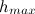
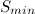

For the general form, the first two parameters, mo_name/att_name are required. All other parameters will resort to default settings if not included on the command line. See the modatt command for details on these parameters.
The keyword syntax uses the fourth token on the command line to define the type of attribute to create. The syntax for each keyword is unique. If the named attribute already exists, values will be overwritten with values as indicated by the keyword.
GENERAL FORMAT:
KEYWORD FORMAT:
cmo/addatt/mo_name/area_normal / normal_type / att_v_name
cmo/addatt/mo_name/unit_area_normal / normal_type / att_v_name
cmo/addatt/mo_name/volume / att_name
cmo/addatt/mo_name/voronoi_volume / att_name
cmo/addatt/mo_name/hybrid_volume / att_name
cmo/addatt/mo_name/voronoi_varea / att_name_xn att_name_yn att_name_zn
cmo/addatt/mo_name/vector / att_v_snk / att_xsrc att_ysrc att_zsrc
cmo/addatt/mo_name/scalar / att_xsnk att_ysnk att_zsnk / att_v_src
cmo/addatt/mo_name/ang_mind / att_name_elem
cmo/addatt/mo_name/ang_maxd / att_name_elem
cmo/addatt/mo_name/ang_minr / att_name_elem
cmo/addatt/mo_name/ang_maxr / att_name_elem
cmo/addatt/mo_name/ang_mind_solid / att_name_elem
cmo/addatt/mo_name/ang_maxd_solid / att_name_elem
cmo/addatt/mo_name/ang_minr_solid / att_name_elem
cmo/addatt/mo_name/ang_maxr_solid / att_name_elem
cmo/addatt/mo_name/edge_connections /att_name_node
cmo/addatt/mo_name/node_num_diff / att_name_node
cmo/addatt/mo_name/xyz_rtp /[att_node_r att_node_theta att_node_phi]
cmo/addatt/mo_name/xyz_rtz /[att_node_r att_node_theta att_node_z]
cmo/addatt/mo_name/voronoi / x_coord_elem y_coord_elem z_coord_elem
cmo/addatt/mo_name/median / x_coord_elem y_coord_elem z_coord_elem
cmo/addatt/mo_name/synth_normal_area
cmo/addatt/mo_name/synth_normal_angle
cmo/addatt/mo_name/sumnode / att_name_elem / att_name_node
cmo/addatt/mo_name/avgnode / att_name_elem / att_name_node
cmo/addatt/mo_name/minnode / att_name_elem / att_name_node
cmo/addatt/mo_name/maxnode / att_name_elem / att_name_node
cmo/addatt/mo_name/quad_quality / att_name_quality / att_name_regularity / att_name_flag
area_normal: creates element vector attribute att_v_name and fills with the x,y,z components of the area normal for each face. The new attribute is nelements in length, type is vdouble, and rank is vector. normal_type choices include xyz, rtz, and rtp. The area_normal is a vector perpendicular to the triangle face with length equal to the area of the triangle. Currently implemented for xyz on triangles only.unit_area_normal: creates vector attribute att_v_name and fills with the x,y,z direction components of the area normal for each face. The new attribute is nelements in length, type is VDOUBLE, and rank is vector. normal_type choices include xyz, rtz, and rtp. The unit_area_normal is a vector perpendicular to the triangle face with length equal to one. Currently implemented for xyz on triangles only.
volume or area: creates an element attribute nelements in length and type VDOUBLE. For volume keyword the att_name attribute is filled with volume(if 3D), area(if 2D) or length(if lines). Currently implemented for triangle areas.
voronoi_volume : creates a node attribute nnodes in length and type VDOUBLE. Currently implemented for a tetrahedral mesh by calling the build stor function to form the Voronoi bounding area for each node. (See more in dump/stor.)
hybrid_volume: creates a node attribute
nnodesin length and of typeVDOUBLEwhich contains the volume of each hybrid median-Voronoi control volume. This is currently implemented for a tetrahedral mesh by calling the build stor function with thehybridoption. See dump/stor for details on what hybrid median-Voronoi volumes are. Currently this option is only available for 3D tetrahedral meshes.voronoi_varea : creates three node attributes nnodes in length and type VDOUBLE. The attributes represent each of the x,y,z components for the Voronoi areas formed by surrounding nodes. Currently implemented for a triangle mesh by calling the same routine that is used to compute the Voronoi areas for the external faces of a tetrahedral mesh. Works only on a triangle mesh. (See more in dump/zone_outside)
vector: creates attribute of rank vector from three existing scalar attributes.
scalar: creates three scalar attributes from an existing vector attribute.
voronoi : creates three element attributes (default names xvor, yvor, zvor) that are the coordinates of the Voronoi point (center of circumscribed circle or sphere) of each element. This is only valid for elements of type tri and tet. This command does not check if a mesh is Delaunay, so a better syntax might be to call this circumscribed_center.
median: creates three element attributes (default names xmed, ymed, zmed) that are the coordinates of the median point (average value of the vertices) of each element. This is valid for all element types.
The following commands create element attributes related to dihedral angle and solid angle:
ang_mind : create a scalar element attribute and fill it with the minimum dihedral angle (degrees) of the element
ang_minr : create a scalar element attribute and fill it with the minimum dihedral angle (radian) of the element
ang_maxd : create a scalar element attribute and fill it with the maximum dihedral angle (degrees) of the element
ang_maxr : create a scalar element attribute and fill it with the maximum dihedral angle (radian) of the element
Dihedral angle will be between 0 and 2π.ang_mind_solid : create a scalar element attribute and fill it with the minimum solid angle (degrees) of the element
ang_maxd_solid : create a scalar element attribute and fill it with the minimum solid angle (radian) of the element
ang_minr_solid : create a scalar element attribute and fill it with the maximum solid angle (degrees) of the element
ang_maxr_solid : create a scalar element attribute and fill it with the maximum solid angle (radian) of the element
Solid angle will be between 0 and 4π.Note: Dihedral angle calculations is supported for tri, quad, tet, pyrimide, prism, hex.
Note: Solid angle calculation is only supported for tet elements.
See also the command quality for adding attributes such as element aspect ratio(quality/aratio) and edge length ratio (quality/edge_ratio), minimum edge length (quality/ edge_min) and maximum edge length (quality/edge_max).edge_connections: creates and integer attribute with the number of edge connections to each node.
node_num_diff: creates an integer attribute with the maximum difference in node number between the node and any node it is connected to. That is for node i connected to nodes j_1, j_2, ...j_n, the attribute will contain attribute=max(|i-j_1|,|i-j_2|, ... |i-j_n|)xyz_rtp: create three node attributes and fill them with the node coordinate, x,y,z in spherical coordinates, r,theta,phi. Default values for the attribute, if not specified are, c_r, c_theta, c_phi.
xyz_rtz: create three node attributes and fill them with the node coordinate, x,y,z in cylindrical coordinates, r,theta,z. Default values for the attribute, if not specified are, c_r, c_theta, c_z .synth_normal_area : create node attributes, x_n_norm, y_n_norm, z_n_norm, and fill them with the area weighted normal of each node.
synth_normal_angle : create a node attributes, x_n_norm, y_n_norm, z_n_norm, and fill them with the angle weighted normal of each node.
The synthetic node normal calculations are only supported for mesh objects of type line, tri and quad. If one wants to compute the normals to, for example, the outside nodes of a hex or tet mesh, one must first extract a surface mesh and then compute the normals to the surface mesh. The synthetic normal is computed by computing the normal to all elements incident upon a node and then taking the weighted average of all the normals. The weight factor is based on area or incident angle depending upon which option is selected.sumnode : create an element attribute att_name_elem and fill it with the sum of the elements' node attribute, att_name_node.
avgnode : create an element attribute att_name_elem and fill it with the average of the elements' node attribute, att_name_node.
minnode : create an element attribute att_name_elem and fill it with the minimum value of the elements' node attribute, att_name_node.
maxnode : create an element attribute att_name_elem and fill it with the maximum of the elements' node attribute, att_name_node.
quad_quality : create element attributes att_name_quality, att_name_regularity, and att_name_flag. These three attributes all describe the quality of each quadrilateral in a quad mesh.
The first attribute represents the measurewhere
is a normalization constant and  is the longest length among the four edges and the two diagonals.
is defined as
where,
is the length of edge i.  is the minimum area of the four triangles that can be constructed by adding one or the other diagonal to the quad. This metric ranges from zero for poor quality quads to one for high quality quads.

The second attribute represents the regularity of each quad ABCD, defined as
where and
and This is a measure of the extent to which the quad is planar, which cannot be detected by the previous metric alone. A perfectly planar quad will have a score of one, while a severely warped quad will have a score of zero.
This is a measure of the extent to which the quad is planar, which cannot be detected by the previous metric alone. A perfectly planar quad will have a score of one, while a severely warped quad will have a score of zero.
Finally, the third attribute is an integer flag which gives some qualitative information about each quad:
- 0 (Good)
- The quad is non-degenerate and for either of the two ways we can draw a diagonal across it, the area vectors of the two triangles have a positive dot product.
- 1 (Degenerate)
- At least one of the triangles determined by three of the vertices of the quad has zero area. In other words, the quad has degenerated into a triangle (or worse).
- 2 (Warped)
- One of the quad's diagonals divides it into two triangles whose area vectors have a negative dot product. If the quad is planar then this means it is self-intersecting (or someone entered the vertices in the wrong order by mistake).
EXAMPLES:
cmo/addatt/cmo/boron1/vdouble/scalar/nnodesCreate node attribute named boron1 with default interpolate (linear) and default persistence (temporary). cmo/addatt/cmo/elem_br/vdouble/scalar/nelementsCreate element attribute named elem_br with default interpolate (linear) and default persistence (temporary). cmo/addatt/-cmo-/boron2/vdouble/scalar/nnodes/asinh/permanent/gl/2.0Create in the currently active mesh object a node attribute named boron2 and initialize it with value 2.0, set IO flages to gmv and LaGriT dumps, set interpolation method to asinh.. cmo/addatt/cmo1/boron3/vdouble/scalar/nnodes/user/temporaryCreate temporary node attribute named boron3. cmo/addatt/-default-/boron3Create attribute named boron3 with default mesh object settings. cmo/addatt/ cmotri / area_normal / xyz / anormCreate and fill element vector named anorm with the x,y,z components for area normals of each triangle. cmo/addatt/ cmotri / unit_area_normal / xyz / n_faceCreate and fill element vector named n_face with the x,y,z components for unit area normals of each triangle. cmo/addatt/cmo1/ scalar / xnorm, ynorm, znorm / anormCreate attributes xnorm, ynorm, znorm from the three components of the vector attribute anorm. cmo/addatt/cmo1/ vector / vnorm /xnorm, ynorm, znormCreate vector attribute vnorm from the three attributes xnorm, ynorm, znorm. cmo/addatt/ cmotri / area / dareaCreate and fill attribute named darea with area of each triangle. cmo/addatt/ cmotet / voronoi_volume / vor_vol
Create and fill attribute named vor_vol with Voronoi volume of each node in tetrahedral mesh. cmo/addatt/ cmotet / hybrid_volume / hybrid_vol
Create and fill an attribute named cmo/addatt/ cmotri / voronoi_varea / xvarea yvarea zvareahybrid_volwith the hybrid median-Voronoi volume of each node in a tetrahedral mesh.
Create and fill attributes xvarea, yvarea, and zvarea with xyz components of the Voronoi areas for each node in triangle mesh. cmo/addatt/ cmoquad / quad_quality / quality regularity flag
Create attributes named quality, regularity, and flag with several quad quality measures (see above). cmo / addatt / cmo / ang_mind / ang_mind
cmo / addatt / cmo / ang_minr / ang_minr
cmo / addatt / cmo / ang_maxd / ang_maxd
cmo / addatt / cmo / ang_maxr / ang_maxr
cmo / addatt / cmo / ang_mind_solid / sang_mind
cmo / addatt / cmo / ang_minr_solid / sang_minr
cmo / addatt / cmo / ang_maxd_solid / sang_maxd
cmo / addatt / cmo / ang_maxr_solid / sang_maxr
cmo / addatt / cmo / synth_normal_area
cmo / addatt / cmo / synth_normal_angle
cmo / addatt / cmo / sumnode / elem_sum_imt / imt
cmo / addatt / cmo / maxnode / elem_max_boron / boron